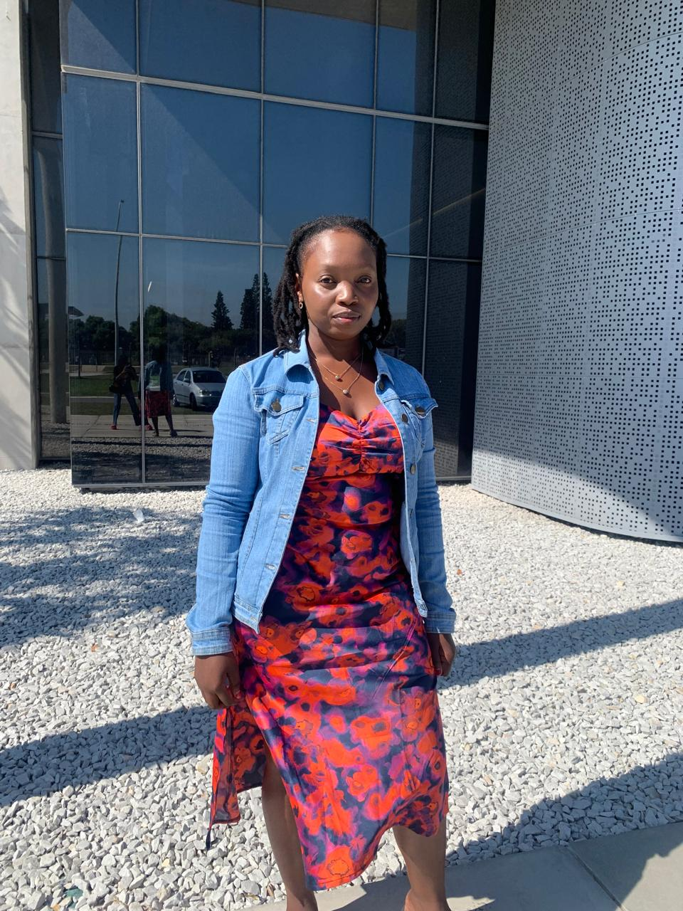

- Login
- Contact Me
- About Me
- Home
 I am a dedicated and passionate final-year student, specializing in software and web development at Nelson Mandela University. Throughout my academic journey, I have immersed myself in various programming languages, Including C#, JavaScript, HTML, and CSS, which has equipped me with a solid foundation in both software and web development. What drives me is a genuine curiosity and enthusiasm for creating technology that can solve real-world problems. I thrive in environments that challenge me and offer opportunities to learn and grow. Whether it's collaborating on team projects or tackling individual assignments, I approach every task with a strong work ethic and a determination to excel. Looking ahead, I am excited to apply my skills and passion in a professional setting, Where I can contribute to impactful projects and continue learning from industry experts. I am eager to bring my dedication, creativity, and technical expertise to a team that values innovation and excellence. I look forward to the opportunity to contribute to and grow within the field of software and web development.